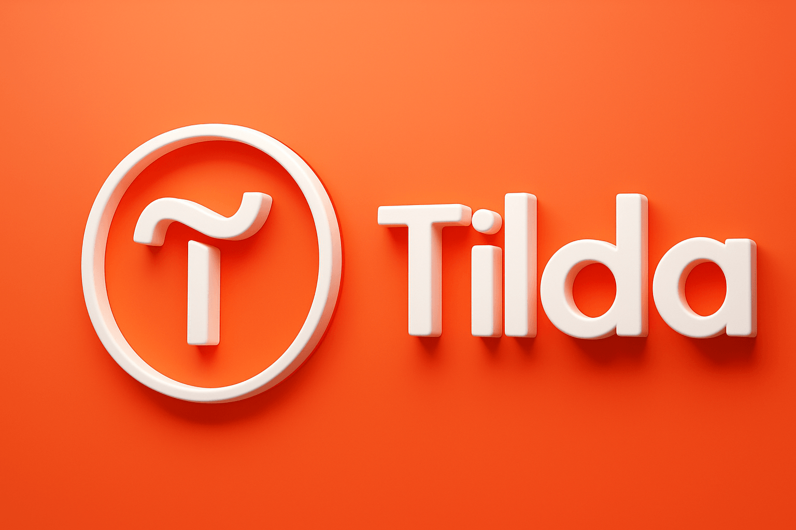
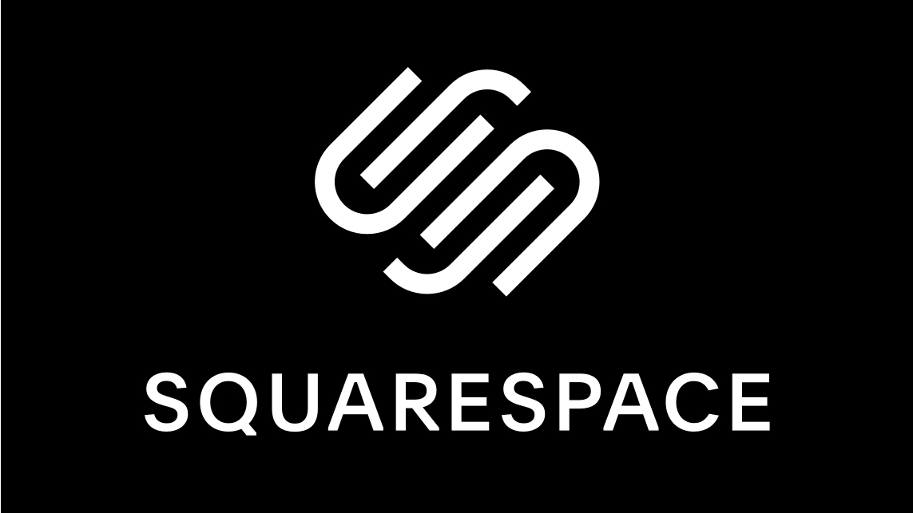
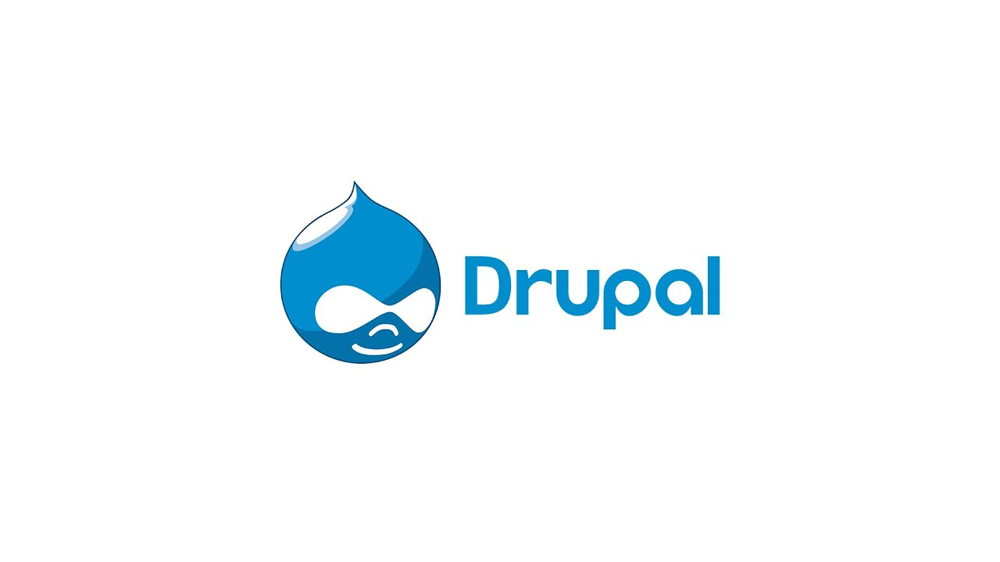

С помощью чего можно создать сайт?
Готовые конструкторы
Онлайн-платформы, которые позволяют создавать сайты без навыков программирования.




CMS
Программное обеспечение, которое позволяет создавать, управлять и изменять контент на веб-сайтах без непосредственного редактирования кода.


Ручная разработка
Создание сайта с нуля, при котором каждый элемент проектируется, программируется и настраивается вручную.